공연이 끝나면,
RIVVE · Brand Film · Storyboard
공연이 끝난 뒤의 공백에서 출발해, AR 글래스와 웨어러블 컨트롤러로 다시 공연 속에 들어가고, 앱 플랫폼으로 팬 경험이 이어지는 흐름입니다. 애플 제품 광고처럼 내레이션 없이 짧은 자막과 음악, 컷 리듬만으로 설명합니다.
Timeline
4막 구성입니다. 컷을 누르면 해당 컷 설명으로 이동합니다.
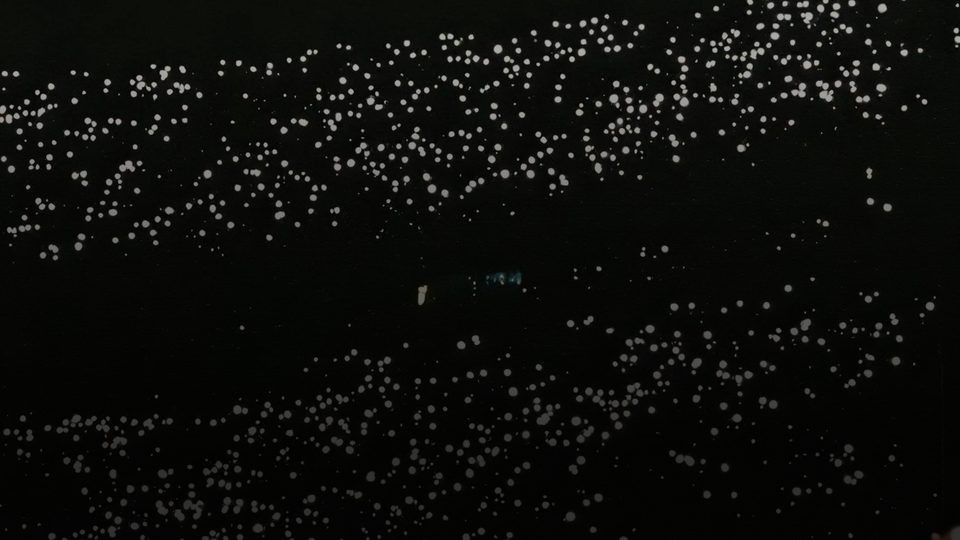
01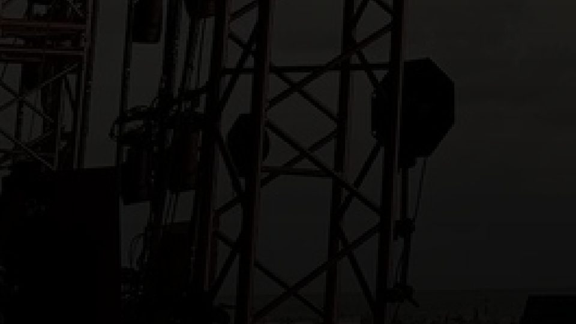
02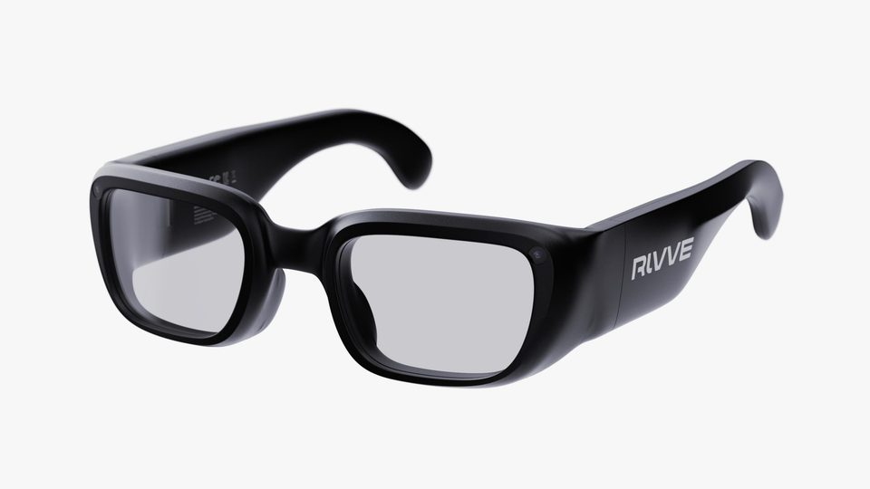
03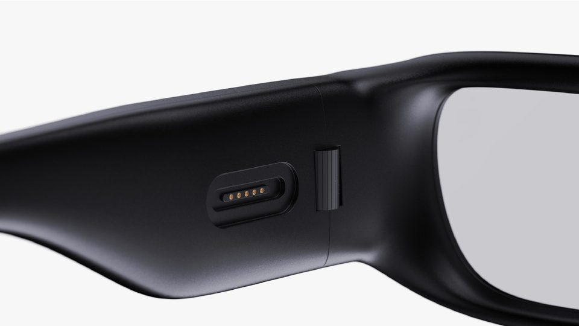
04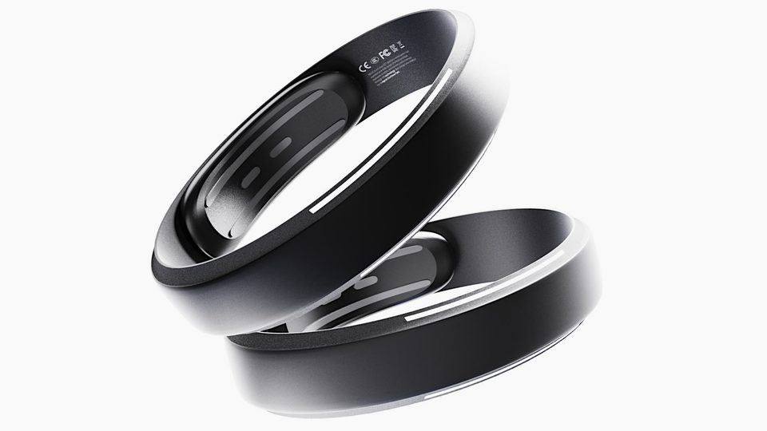
05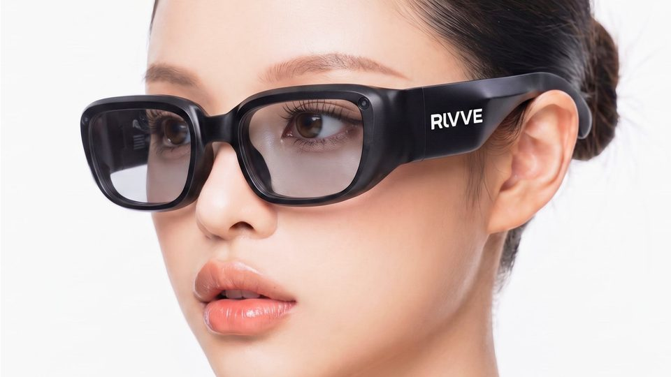
06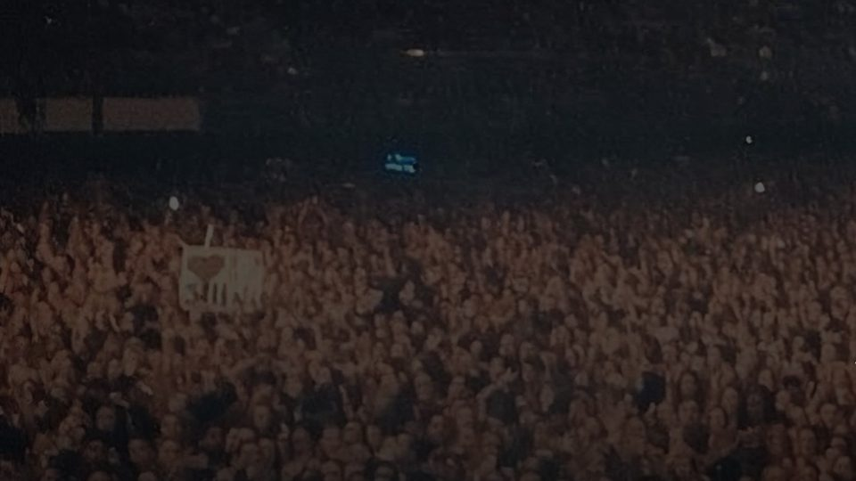
07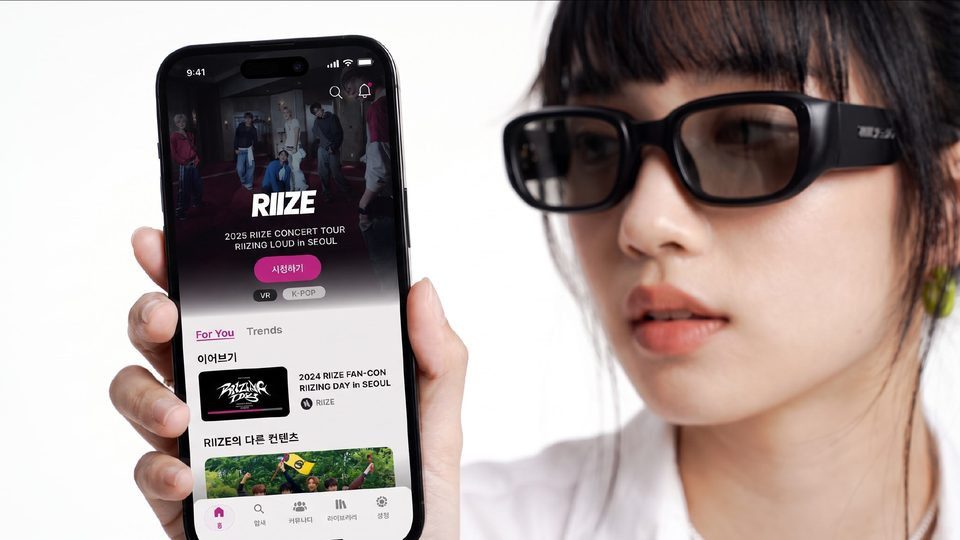
08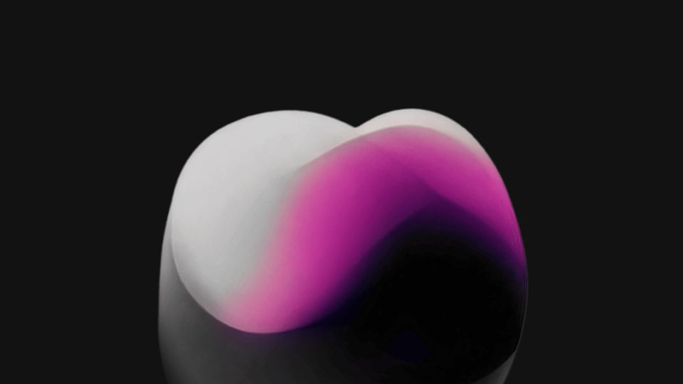
09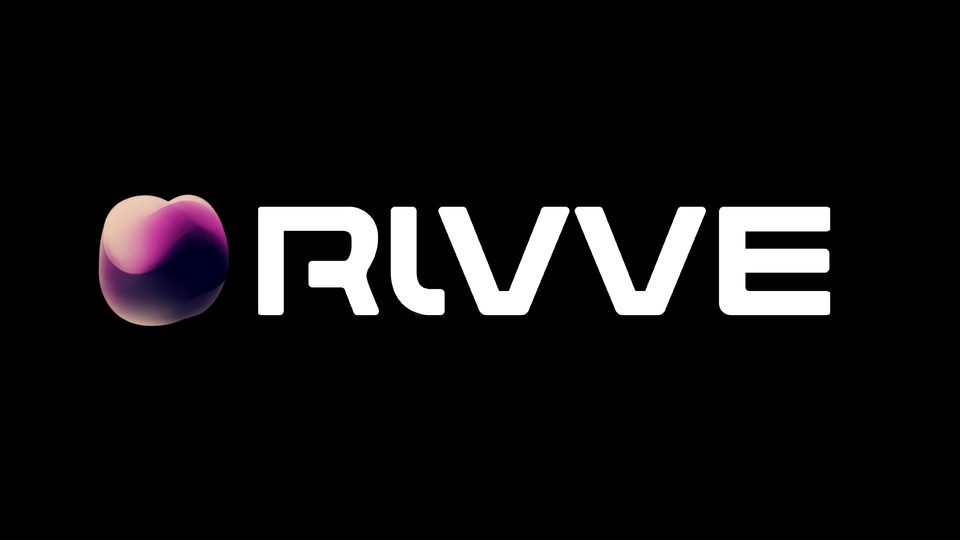
10Direction
PDF의 심볼 컬러를 그대로 씁니다. 핑크는 자막 강조 한 단어와 심볼에만 사용합니다.
Shot List
프레임 위 글자는 실제 화면에 들어갈 자막 위치 예시입니다. 이미지는 프로젝트 PDF에서 가져온 참고 소스입니다.
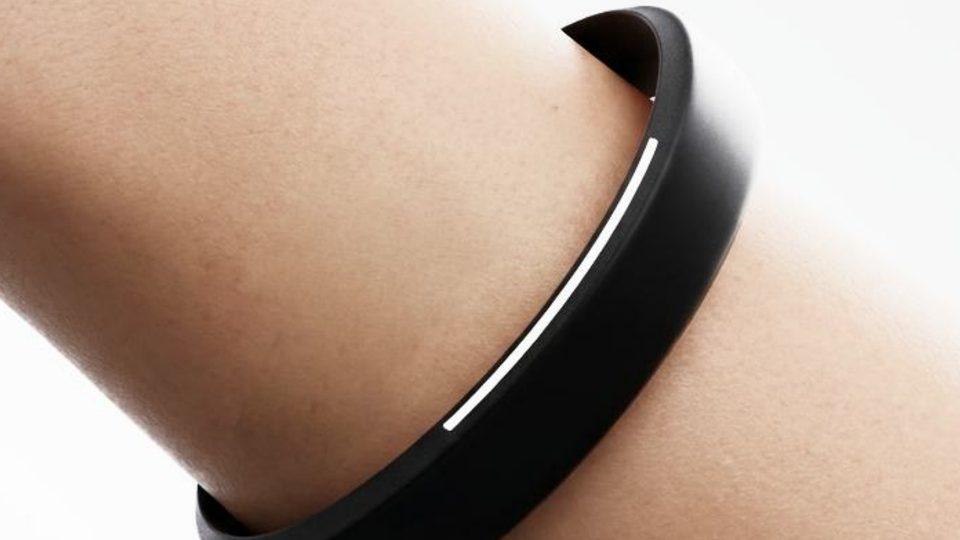
B · 1.5″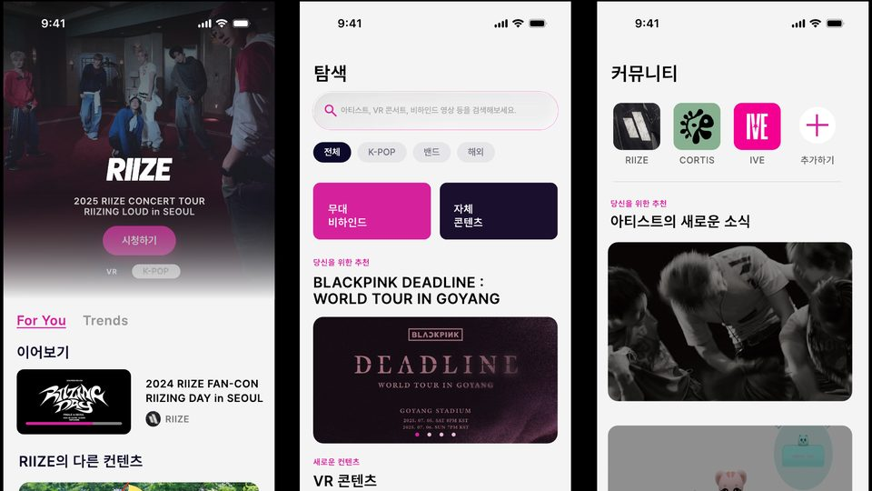
B · 1.5″Script
편집 프로그램에 그대로 옮겨 쓸 수 있도록 시간 순서대로 정리했습니다.
| 시간 | 자막 | 사운드 큐 |
|---|---|---|
| 00:00 – 00:03 | 공연이 끝나면, | 먼 함성, 앵콜 떼창 |
| 00:03 – 00:06 | 그 순간도, 끝나야 할까요? | 함성 컷, 저음 한 번, 정적 |
| 00:06 – 00:09 | RIVVE AR Glass | 비트 진입 |
| 00:09 – 00:12 | 자막 없음 | 포커스 클릭 효과음 |
| 00:12 – 00:15 | Wearable Controller | 하이햇 진입 |
| 00:15 – 00:18 | 공연 속으로, 직접 들어가 보세요. | 라이저 빌드업 |
| 00:18 – 00:21 | 원하는 자리에서, 원하는 시점으로. | 드롭, 라이브 사운드와 함성 |
| 00:21 – 00:24 | 공연, 비하인드, 커뮤니티까지. 하나의 플랫폼에서. | 탭 효과음, 리버스 스웰 |
| 00:24 – 00:27 | 자막 없음 | 앰비언트 패드 |
| 00:27 – 00:30 | 공연을 이어, 순간을 잇다. / Beyond the Stage, Beyond the Moment. | 단음 신스, 정적 |
Production